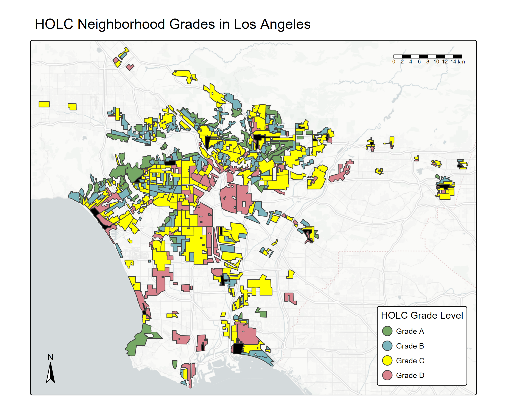
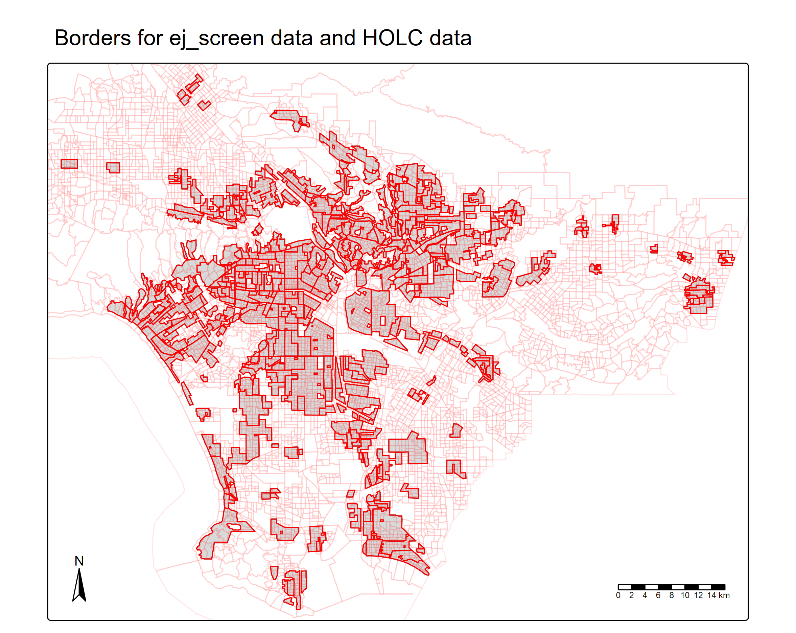
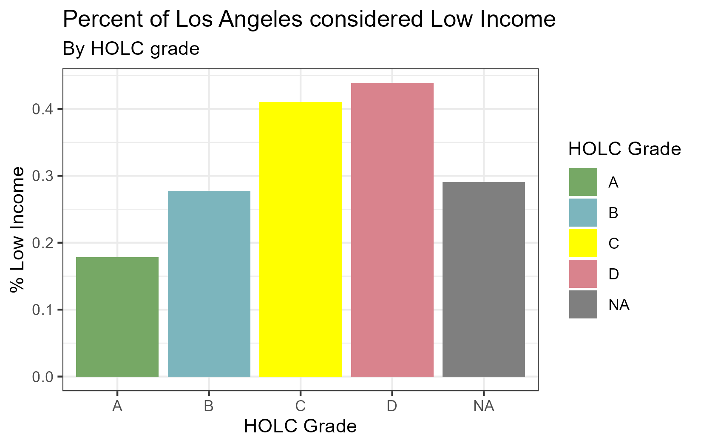
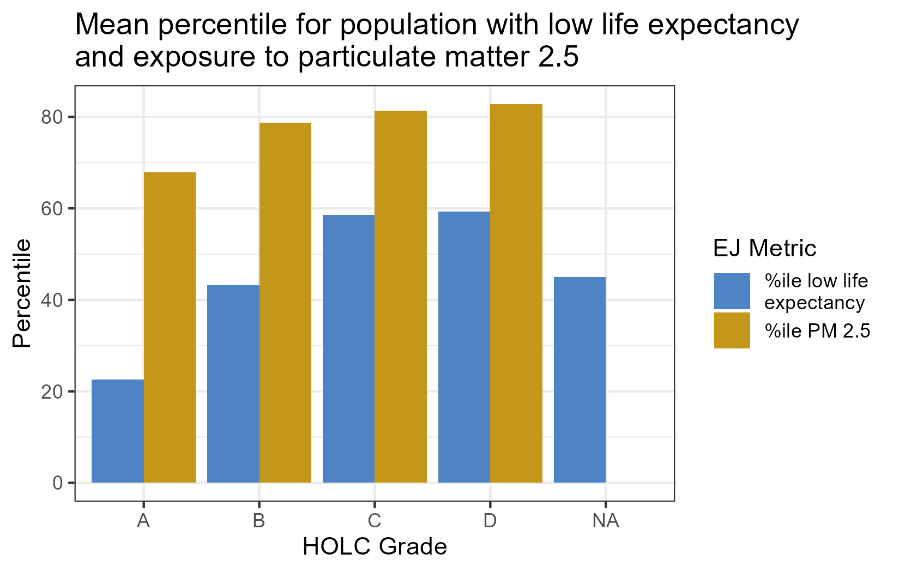
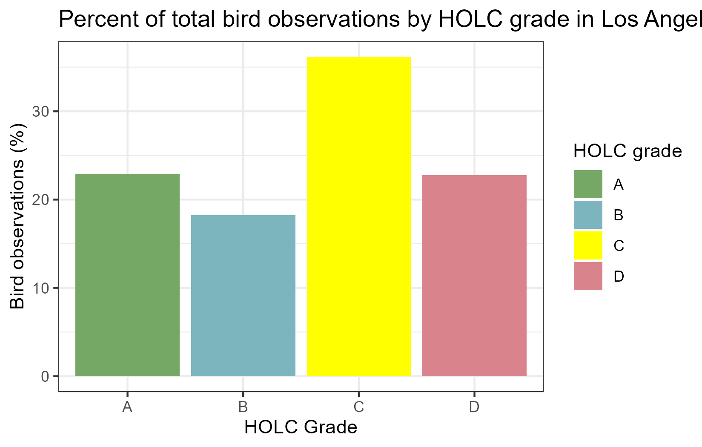

# read in packages
library(here)
library(tmap)
library(sf)
library(tidyverse)
library(patchwork)
library(gt)Exploring the Legacy of Redlining
In the 1930s, the Home Owners’ Loan Corporation (HOLC) categorized neighborhoods according to an arbitrary estimate of safety relevant to real estate investing. Categories ranged from A (green), B (blue), C (yellow), D (red). This meant homes in the red category would rarely get home loans, over time creating wealth and health. This phenomenon is known as “redlining”. Recently, there was a study finding negative effects of redlining on biodiversity observations in redlined communities.
In this project, we will investigate environmental (in)justice metrics and biodiversity observations in correlation with HOLC grades in Los Angeles, California.
Part 1: Explore historical redlining in Los Angeles and its legacy on present-day environmental justice
First we will visualize where historical HOLC grades were mapped in Los Angeles, and specifically where historical redlining neighborhoods were outlined.
# read in HOLC data
holc <- st_make_valid(st_read(here("data", "mapping-inequality",
"mapping-inequality-los-angeles.json")))# find the colors used for visualizations
unique(holc$fill)[1] "#76a865" "#7cb5bd" "#ffff00" "#d9838d" "#000000"# read in ej screen data
ej_screen <- st_make_valid(st_read(here("data", "ejscreen","EJSCREEN_2023_BG_StatePct_with_AS_CNMI_GU_VI.gdb"))) %>%
# select columns of interest to make wrangling use less memory
select(ID, STATE_NAME, ST_ABBREV, CNTY_NAME, REGION, ACSTOTPOP, LOWINCPCT,
P_PM25, P_LIFEEXPPCT) %>%
filter(CNTY_NAME == "Los Angeles County")# map of neighborhood grades
grade_map <- tm_shape(holc) +
tm_polygons(fill = "fill") +
tm_basemap("CartoDB.PositronNoLabels") + # colors the basemap a certain color
tm_add_legend(labels = c("Grade A", "Grade B", "Grade C", "Grade D"),
fill = c("#76a865","#7cb5bd","#ffff00","#d9838d"),
title = "HOLC Grade Level",
position = tm_pos_in("right", "bottom")) +
tm_title("HOLC Neighborhood Grades in Los Angeles") +
tm_scalebar(position = tm_pos_in("right", "top")) +
tm_compass(position = tm_pos_in("left", "bottom"))
tmap_save(grade_map, here::here("figs", "holc_grade_map.png"))Map saved to C:\Users\dixit\Documents\MEDS\EDS-223\eds223-homework2\figs\holc_grade_map.pngResolution: 2354.923 by 1872.673 pixelsSize: 7.849743 by 6.242242 inches (300 dpi)
Next, we will compare the percentage of the population that occupy the area in each grade. We will determine size of population with percentages of census blocks.
# combine ej screen data and holc data
# make sure both data frames are sf object, and if they are not then make them as sf object
if ("sf"%in% class(holc)) {
print("This dataframe is an sf object")
} else {
st_as_sf(holc)
print(paste("Is this dataframe an sf object?", "sf"%in% class(holc)))
}[1] "This dataframe is an sf object"if ("sf" %in% class(ej_screen)) {
print("This dataframe is an sf object")
} else {
st_as_sf(holc)
print(paste("Is this dataframe an sf object?", "sf" %in% class(ej_screen)))
}[1] "This dataframe is an sf object"# if else statement to check for CRS match and fix if they do not
if(st_crs(ej_screen) == st_crs(holc)) {
print("crs match!")
} else {
holc_transform <- st_transform(holc, crs = st_crs(ej_screen))
print(paste("Do the CRS match now?", st_crs(ej_screen) == st_crs(holc_transform)))
}[1] "Do the CRS match now? TRUE"Let’s double check where our data overlap before joining. We want to look at all locations we have both a HOLC grade and environmental justice data for, and which locations we have census block info for but no HOLC grade.
# Quick plot to check for data overlap
join_map <- tm_shape(holc_transform) +
tm_polygons() +
tm_shape(ej_screen) +
tm_borders(col = "red", col_alpha = 0.1) +
tm_shape(holc_transform) +
tm_borders(col = "red") +
tm_scalebar(position = tm_pos_in("right", "bottom")) +
tm_compass(position = tm_pos_in("left", "bottom"))
tmap_save(join_map, here::here("figs", "join_map.png"))Map saved to C:\Users\dixit\Documents\MEDS\EDS-223\eds223-homework2\figs\join_map.pngResolution: 2354.923 by 1872.673 pixelsSize: 7.849743 by 6.242242 inches (300 dpi)
We can see the borders of our HOLC data do not perfectly match our census block data, and there are many areas of LA that we do not have a HOLC grade for.
# join spatially
# some ej_screen data have 2+ HOLC grades associated to them, use st_within
ej_holc <- st_join(ej_screen, holc_transform, join = st_within) %>%
st_drop_geometry()
# check rows match
if (nrow(ej_holc) == nrow(ej_screen)) {
print("rows match")
} else {
stop("Rows do not match length")
}[1] "rows match"# check each ID was carried over
if (length(unique(ej_holc$ID)) == length(unique(ej_screen$ID))) {
print("All IDs carried over")
} else {
stop("New dataframe has too many or too few observations, double check join")
}[1] "All IDs carried over"# check duplicates
if (sum(duplicated(ej_holc$ID)) == 0) {
print("No duplicate ID's")
} else {
stop("ID's were duplicated, double check join")
}[1] "No duplicate ID's"Let’s create a summary table to compare how many census block groups occupy each HOLC grade neighborhood.
# summary table containing:
# the percentage of census block groups that fall within each HOLC grade
# Also include the percent of census black groups that don’t fall within a HOLC grade
ej_holc %>%
group_by(grade) %>%
summarise(count = n()) %>%
mutate(percent_in_grade = (count / sum(count)) * 100) %>%
gt() %>%
tab_header(title = "Census block by HOLC grade",
subtitle = "Los Angeles")| Census block by HOLC grade | ||
|---|---|---|
| Los Angeles | ||
| grade | count | percent_in_grade |
| A | 15 | 0.2275831 |
| B | 78 | 1.1834320 |
| C | 509 | 7.7226521 |
| D | 287 | 4.3544227 |
| NA | 5702 | 86.5119102 |
ej_holc %>%
filter(grade != "NA") %>%
group_by(grade) %>%
summarise(count = n()) %>%
mutate(percent_in_grade = (count / sum(count)) * 100) %>%
gt() %>%
tab_header(title = "Census block by HOLC grade",
subtitle = "HOLC neighborhoods only")| Census block by HOLC grade | ||
|---|---|---|
| HOLC neighborhoods only | ||
| grade | count | percent_in_grade |
| A | 15 | 1.687289 |
| B | 78 | 8.773903 |
| C | 509 | 57.255343 |
| D | 287 | 32.283465 |
When looking only at neighborhoods with a HOLC grade, we can see that the “desirable” grades of A and B combined have population sizes that make up less 10% of the population for HOLC graded neighborhoods, with grade A containing only about 2% of census blocks for HOLC grades. The highest percentage of census block groups are in grade C, followed by grade D. Los Angeles County, however, largely has communities where there is no historic HOLC grading, with about 87% of census blocks being outside of a HOLC graded neighborhood.
We will look closer at a few environmental justice metrics as they pertain to HOLC grades. The metrics we will look at are: - % low income - percentile for Particulate Matter 2.5 - percentile for low life expectancy
# find the mean for each ej metric by holc grade
ej_holc_sum <- ej_holc %>%
group_by(grade) %>%
summarise(mean_income = mean(LOWINCPCT),
mean_pm25 = mean(P_PM25),
mean_lowlife = mean(P_LIFEEXPPCT, na.rm = TRUE))
# pivot ej metrics longer for easier plotting
ej_holc_sum_long <- ej_holc_sum %>%
pivot_longer(cols = c(mean_pm25, mean_lowlife),
names_to = "metric",
values_to = "value")# refactor holc grades to plot colors easier
ej_holc_sum <- ej_holc_sum %>%
mutate(grade = fct_relevel(grade,
"A", "B", "C", "D"))
# plot mean income level by holc grade
income_holc_plot <- ggplot(ej_holc_sum, aes(x = grade, y = mean_income, fill = grade)) +
geom_col() +
scale_fill_manual(values = c("#76a865", "#7cb5bd", "#ffff00", "#d9838d")) +
theme_bw() +
labs(x = "HOLC Grade",
y = "% Low Income",
title = "Percent of Los Angeles considered Low Income",
subtitle = "By HOLC grade",
fill = "HOLC Grade")
ggsave(plot = income_holc_plot, here::here("figs", "income_plot.png"))Saving 7 x 5 in image We can see a very clear positive trend of percentage of the population that is considered low income with HOLC grade. As HOLC grade gets lower there is a higher percentage of the population that is low income. Redlined communities have an average of 25% higher population considered low income than HOLC grade A communities. Compared to communities outside of the HOLC grades, we still see the negative effects of redlining as both grade C and D neighborhoods have at least 10% higher low income populations.
# plot percentile life expectancy and PM2.5 by holc grade
ej_metric_holc_plot <- ggplot(ej_holc_sum_long, aes(x = grade, y = value, fill = metric)) +
geom_bar(stat = "identity", position = position_dodge()) +
scale_fill_manual(labels = c("%ile low life
expectancy", "%ile PM 2.5"),
values = c("#4E84C4", "#C4961A")) +
theme_bw() +
labs(x = "HOLC Grade",
y = "Percentile",
title = "Mean percentile for population with low life expectancy
and exposure to particulate matter 2.5",
fill = "EJ Metric")
ggsave(plot = ej_metric_holc_plot, here::here("figs", "metric_holc_plot.png")) We see a similar positive trend in low life expectancy with HOLC grade. As HOLC grade gets lower, the mean percentile of the population that is in an area where life expectancy is lower than national norms goes up. This means that on average, populations that live in redline’d or lower HOLC grade communities are predicted to have a lower life expectancy compared to national norms. Compared to neighborhoods with no HOLC grade, redlined communities continue to have a higher percentile of community with lower life expectancy, once again showing the long lasting negative effects of redlining. We don’t see as strong of a positive trend for the percentile of particulate matter in the air, but as HOLC grade gets lower we do see a slight increase in inhalable particles that are 2.5 micrometers or smaller. This could be to general air quality in Los Angeles being poor and air movement being somewhat homogeneous between neighborhoods.
The process of outline these “security maps” in 1935 by the HOLC was, in their minds, simple. Newer, affluent suburbs outside of big cities were labeled “A” and “B”, whereas older and typically prominent African American and Mexican American neighborhoods were labeled “C” and “D”. These D (red) communities for decades after these maps were made, were denied financial support in the form of credit, home loans, insurance, healthcare, and even experienced inflated interest rates due to this lack of competition.
It is worth noting these maps were not created arbitrarily. Almost every African American-dominant neighborhood was listed in the “D” red grade. At a time of heightened racism in the United States, this allowed for legal methods to deny loans and other federal benefits to minority communities, furthering and cementing racially segregated cities to this day and limiting economic mobility for those in redline’d communities.
Over time, this lack of financial support has led to the decline in long term capital in these areas, meaning lower general income, less available healthcare leading to lower life expectancy and quality of life, and furthering the inequality between the higher graded neighborhoods and lower graded neighborhoods with no economic assistance to bridge the gap. Lack of capital in a neighborhood can lead to other deficiencies not visualized here, such as lack of education, food deserts, and generational poverty.
“Neighborhoods fell into a vicious circle of decline: the inability to access capital lead to disrepair and the physical decline of a community’s housing stock, which in turn reinforced the redline designation.” Segregation in the City of Angels: A 1939 map of housing inequality in L.A. (2022, June 21). PBS SoCal. https://www.pbssocal.org/shows/lost-la/segregation-in-the-city-of-angels-a-1939-map-of-housing-inequality-in-l-a
These all feed into each other in such a way that makes it very difficult for a redline’d neighborhood to escape the consequences of its past, especially with redlining criteria still being used by many financial institutions. Financial, societal, and policy changes are necessary to mend the mistakes of our past and ensure safe and equitable housing.
Part 2: Legacy of redlining in biodiversity observations
The economic legacy and racial segregration of redlining is evident, and recently there have been studies to look at the effects on the environment. Here, we will model our visualizations after Ellis-Soto et al. 2023, who looked at the effects of redlining on bird biodiversity observations across the United States.
# read in biodiversity data
birds <- st_read(here("data", "gbif-birds-LA", "gbif-birds-LA.shp"))
# filter for only the grade column
holc_grade <- holc %>%
select(grade)# check for CRS match
if(st_crs(holc_grade) == st_crs(birds)) {
print("crs match!")
} else {
holc_transform <- st_transform(holc, crs = st_crs(ej_screen))
print(paste("Do the CRS match now?", st_crs(ej_screen) == st_crs(holc_transform)))
}[1] "crs match!"# join bird data to HOLC grades
# birds is point data, so default st_intersects should be fine
bird_holc <- st_join(birds, holc_grade) %>%
st_drop_geometry() %>%
filter(!is.na(grade)) # only looking at HOLC grades, so remove NAs
# calculate percents
bird_holc_percent <- bird_holc %>%
group_by(grade) %>%
summarise(n = n()) %>%
mutate(percent = (n / sum(n))*100)
# plot percents
bird_holc_plot <- ggplot(bird_holc_percent, aes(x = grade, y = percent, fill = grade)) +
geom_col() +
scale_fill_manual(values = c("#76a865", "#7cb5bd", "#ffff00", "#d9838d")) +
theme_bw() +
labs(x = "HOLC Grade",
y = "Bird observations (%)",
title = "Percent of total bird observations by HOLC grade in Los Angeles",
fill = "HOLC grade")
ggsave(plot = bird_holc_plot, here::here("figs", "bird_plot.png"))Saving 7 x 5 in image If you look at the paper Ellis-Soto et al. 2023, our results do not look the same as their results. In their methods, they describe calculating sampling density of bird records by accounting for HOLC grade area in km^2, and also log transformed their data. We simply looked at the raw samples and got total percent of observations by grade.
The longstanding legacy of redlining is evident in population metrics such as life expactancy and income level, in environmental metrics such as airborne particulate matter, and in ecological observations such as bird sightings. Without instrumental federal and state regulations preventing future discrimination to these communities, we will continue to see these negative effects perpetuate the vicious cycle left behind from redlining.